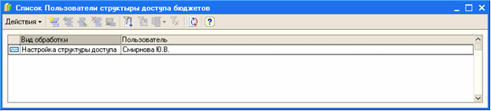

Если нет возможности зайти в обр. Настройка Структуры Доступа К Бюджетам, пишет сообщение "Форма настроки уже открыта другим пользователем: Смирнова Ю.В.". Нужно зайти в регистр свед. и удалить запись о пользователе.
